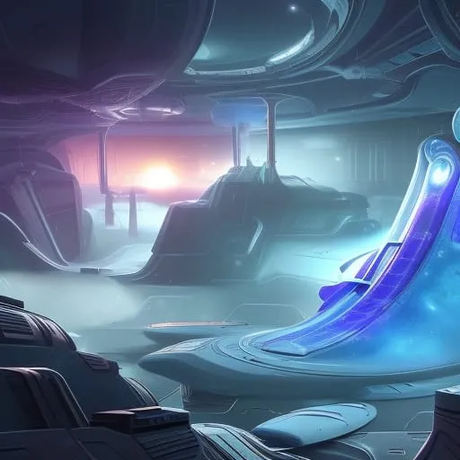

"Niraxus: A New Hope"
Chapter 1: The Mission
The Nebula Explorer, a colony ship built to house and transport a crew of 50 individuals, set off on a mission to a distant planet named Niraxus. The crew, comprising of scientists, engineers, medical staff, flight crew, and marines, were handpicked for their skills and expertise. The ship was equipped with the latest technology, and had enough supplies to sustain the crew for several years. The captain of the ship, Captain Emma Patel, sat in the cockpit, surrounded by her flight crew, as they prepared for launch. Beside her sat the co-pilot, Lieutenant Jackie Johnson, a young African-American woman who had trained under Captain Patel for several years. The ship's medic, Dr. Khalid Ahmed, a middle-aged Palestinian man, sat in the infirmary, monitoring the crew's vital signs. The chief engineer, Mr. Chen, a Chinese-American man, was in the engine room, making sure everything was functioning smoothly. The crew also included a diverse group of scientists, marine soldiers, and other specialists, all with their unique skills and expertise. One of the marine soldiers, Sgt. Michael Taylor, a rugged and experienced man in his thirties, was in charge of the ship's security and the safety of the project. As the ranking officer of the marine contingent, he was responsible for the well-being of his soldiers and ensuring that they were prepared for any situation. He walked around the ship, checking on his men and making sure that they were ready for the mission. As the countdown began, Captain Patel turned to her crew and said, "This is it, team. We've trained for this moment for years. We know the risks and the challenges ahead, but we also know the potential rewards. We're about to make history, let's make it a good one." The crew let out a cheer as the engines of the Nebula Explorer roared to life, propelling the ship out of Earth's atmosphere and into the vast expanse of space.